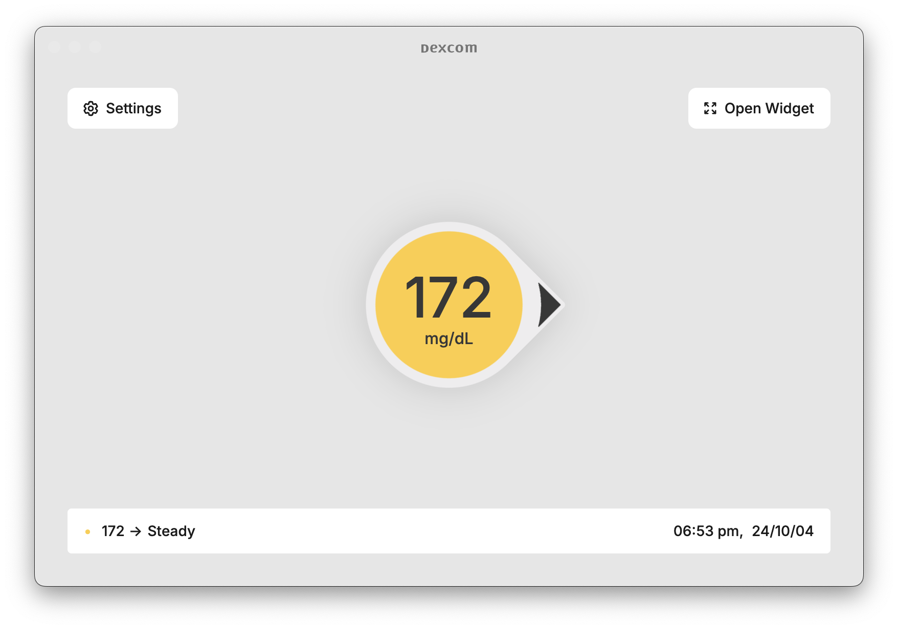

Free & open source.
View on GitHub →
Real-time
Dexcom readings
right on your Mac.
Download for macOS
macOS 12+ · Apple Silicon

Runs locally
No web app, no servers. Polls Dexcom directly on your Mac.
Keychain-encrypted
Credentials sealed at rest by macOS. Never stored in plain text.
Real-time
A menu-bar readout and always-on-top widget. Your numbers, always in view.
Open source.
Built for the community.
Completely free — not affiliated with Dexcom, Inc.
Download for macOS